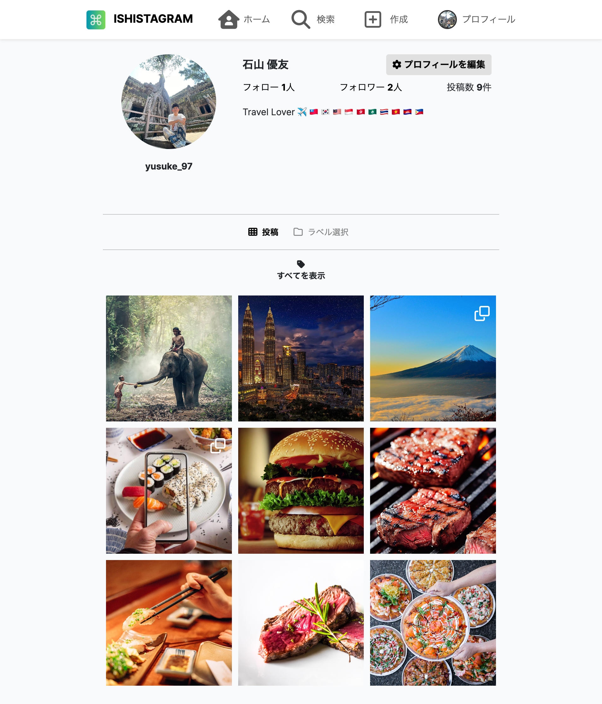
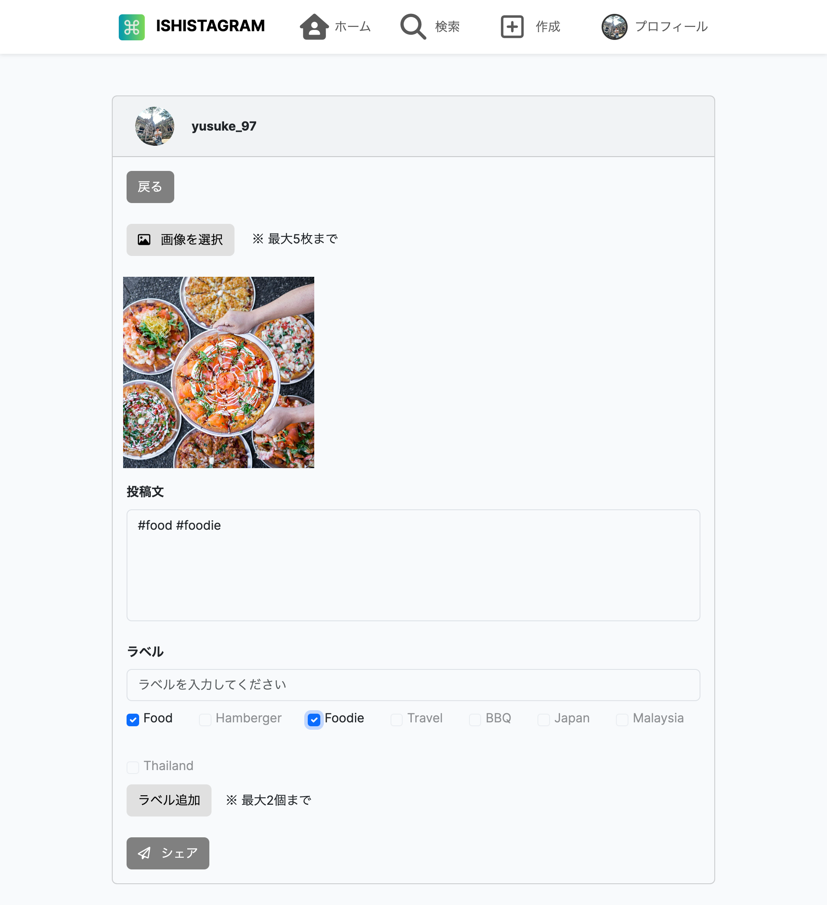
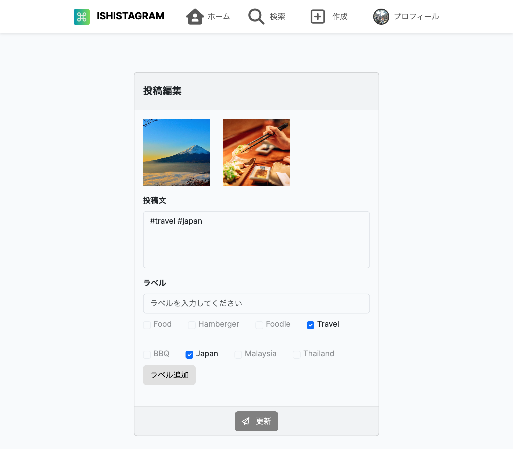
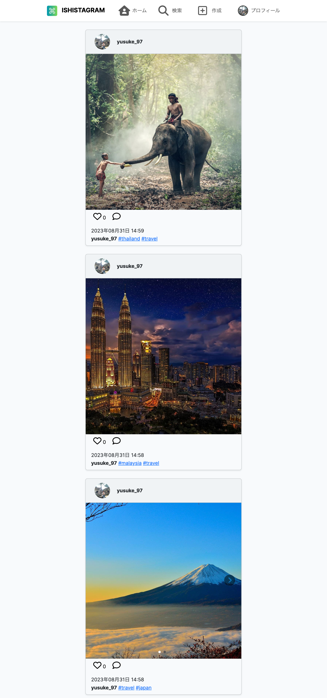
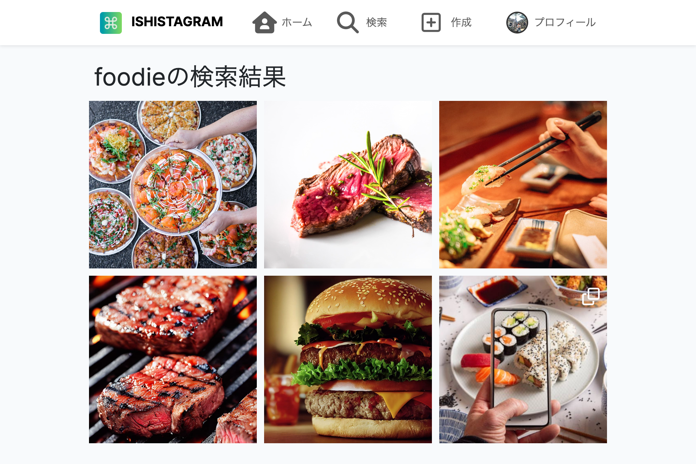
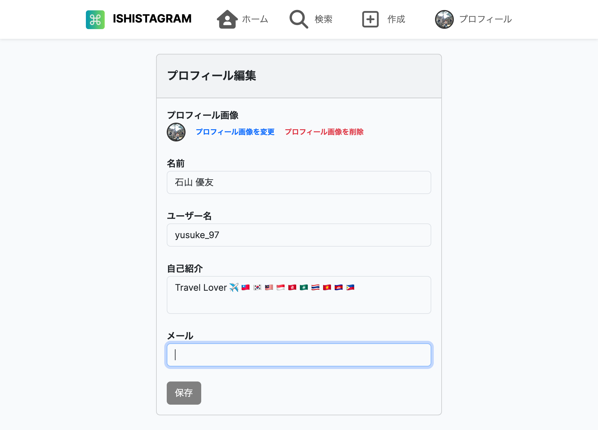
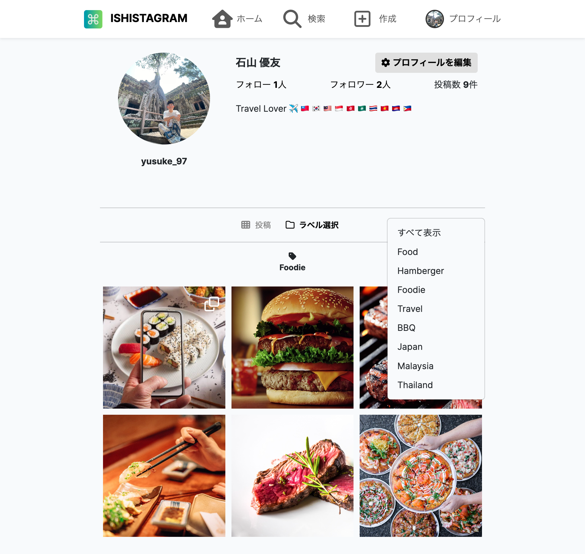

プロフィール画面

新規投稿画面

投稿編集画面

投稿一覧画面

検索結果画面

プロフィール編集画面

プロフィール画面と新規投稿画面、投稿編集画面、投稿一覧画面、検索結果画面、プロフィール編集画面の6画面から構成される画像投稿型SNSのWebアプリケーションです。
アプリURL
https://ishistagram-914f42dea72b.herokuapp.com
ソースコードURL
https://github.com/yusuke-97/ishistagram_app
担当
基本設計、開発、テスト
サイトの目的
ラベル機能による投稿管理の効率化
使用技術
HTML/CSS/JavaScript/jQuery/PHP/Laravel/Amazon S3
デザインについて

既存の画像投稿型SNSであるインスタグラムを参考にして開発しました。コンピュータのフォルダー管理をヒントにして、インスタグラムには存在しないラベル機能というものを実装しました。 投稿にラベルを設定することで、プロフィール画面上の投稿画像をラベルごとに管理することができます。
例えば、上記の画像が示すように、 「Foodie」というラベルを選択した時にはラベル名に「Foodie」が設定されている投稿のみが表示されます。 また、『 』の下に「Foodie」というラベル名が表示される処理を実装しております。
コーディングについて
Webアプリケーションを開発する上で、PCはもちろんのこと、スマートフォンでも見やすくするためレスポンシブ対応を施しております。